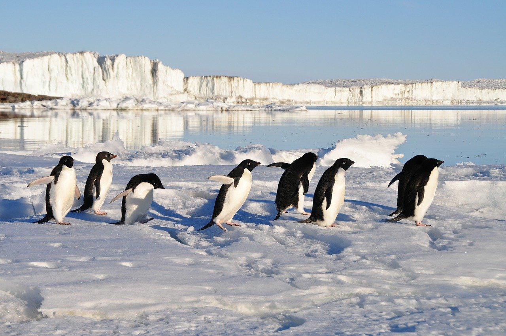
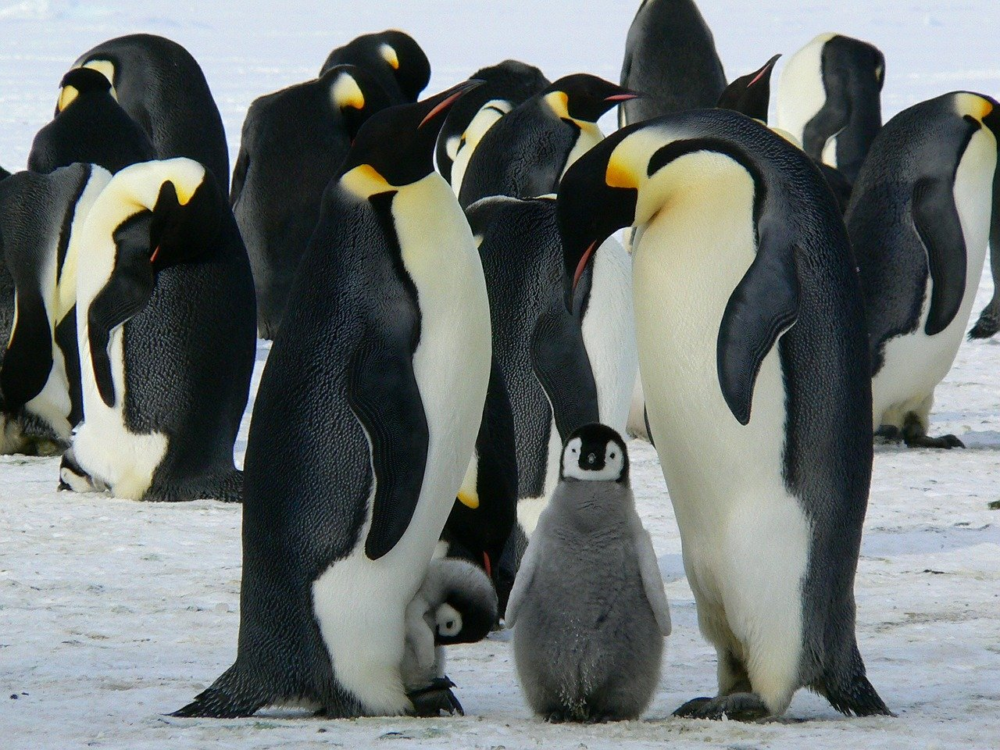
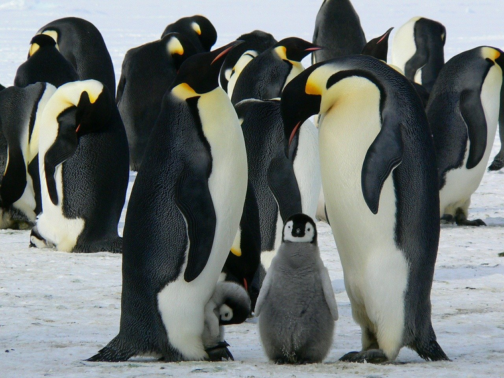
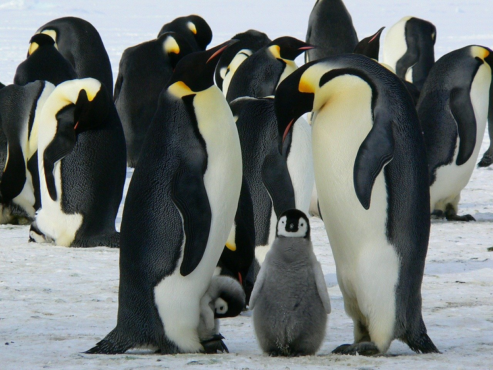
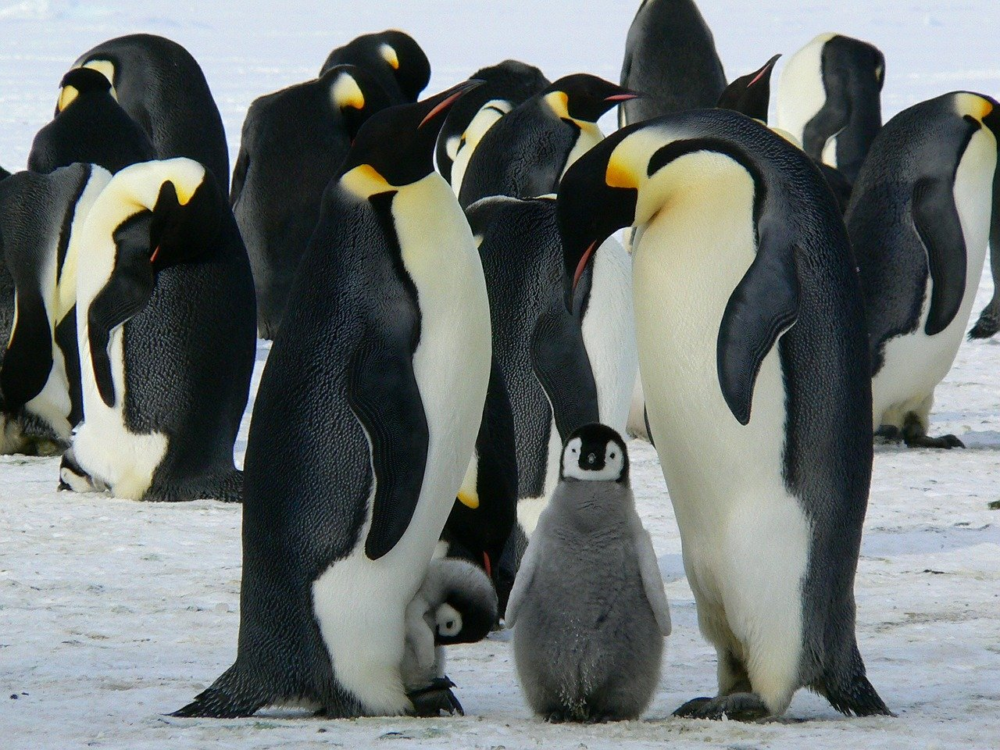

 



Penguins mainly reside in the southern hemisphere and are flightless sea birds, meaning that they cannot fly and instead use their wings/flippers for swimming. Penguins spend about 75% of their time in the sea and can spend months staying at the sea. They reside in areas that are mostly free from land predators since they lay their eggs and breed on land and not in the sea. Different species of penguins have slightly different diets but mainly consist of krills, squids, and fishes.